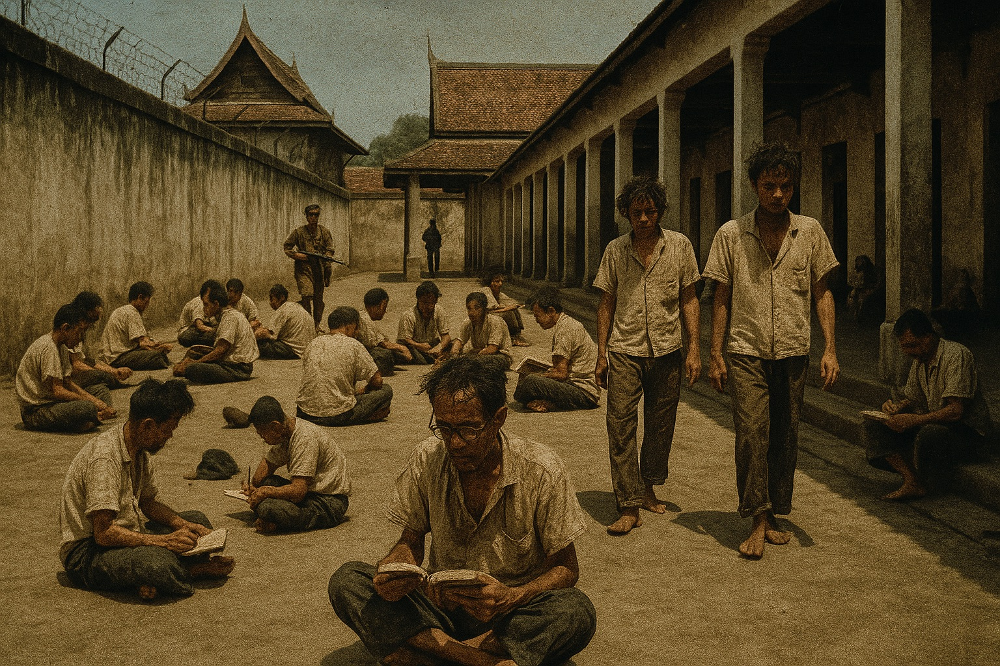

5 Prison University
5.1 Ward Six: An Unlikely Center of Learning
Bang Kwang prison’s Ward Six became an extraordinary intellectual community where political prisoners transformed their confinement into an opportunity for education and cultural exchange.

The irony was almost too bitter to contemplate. The men whom the revolutionary government had imprisoned as enemies of progress would create, within the confines of Bang Kwang prison, one of the most remarkable educational experiments in Thai history. The political prisoners whose “reactionary” ideas had supposedly made them unfit for participation in the new Thailand would demonstrate, through their response to confinement, an intellectual vitality and commitment to learning that surpassed anything achieved by their captors.
When So Sethaputra arrived at Bang Kwang in early 1934, following his conviction for sedition (as described in Chapter 4), he entered a world that defied every expectation about prison life. The forbidding concrete walls topped with electrified razor wire enclosed not the brutalized, demoralized population one might expect, but rather a community of scholars, teachers, and students who had transformed their cells into classrooms and their shared imprisonment into an opportunity for unprecedented cultural exchange.
5.2 The Architecture of Confinement
Bang Kwang prison had been built in 1931 as a modern, high-security facility designed to house common criminals according to the latest penological theories. The prison’s design reflected contemporary ideas about criminal rehabilitation: individual cells to prevent the contamination of minor offenders by hardened criminals, open corridors to facilitate surveillance, and workshops where prisoners could learn useful trades. What the designers had not anticipated was that Ward Six would be filled not with ordinary criminals but with some of the most educated and accomplished men in Thailand.
Ward Six had been hastily redesigned after the 1932 coup to accommodate the influx of political prisoners. Each chamber was widened to house twelve men in what had originally been designed as single-occupancy cells. The overcrowding was severe, but it had an unexpected benefit: it forced the prisoners into close contact with one another, creating opportunities for intellectual exchange that would not have existed in a conventional prison setting.
The fifty chambers of Ward Six housed a remarkable cross-section of the old elite: former cabinet ministers and senior civil servants, military officers who had remained loyal to the monarchy, university professors and journalists, lawyers and engineers, even members of the royal family. Many possessed advanced degrees from European and American universities. Their collective expertise spanned virtually every field of human knowledge, from agriculture and medicine to literature and philosophy.
The open corridor that connected all the chambers became the main thoroughfare of an impromptu university campus. Prisoners would gather in small groups to discuss everything from Buddhist philosophy to modern engineering, from Thai classical literature to contemporary European politics. The guards, most of whom were poorly educated, found themselves supervising discussions that were entirely beyond their comprehension.
5.3 The Emergence of an Educational Community
The transformation of Ward Six into an educational community began almost immediately after the arrival of the first political prisoners. Unlike common criminals, who typically responded to incarceration with despair or rage, these men possessed both the intellectual resources and the cultural background necessary to create meaning from their suffering. They understood imprisonment not merely as punishment but as an opportunity to pursue activities that their previous busy lives had prevented.
The initiative came from the most senior prisoners, men like Prince Sithiporn Kridakorn, brother of Prince Bovoradej and a trained agronomist who had managed experimental farms before his arrest. Prince Sithiporn quickly emerged as the spiritual leader of the political prisoners, a man whose aristocratic bearing and genuine concern for others made him a natural focal point for communal activities. His decision to offer classes in agriculture and animal husbandry to younger prisoners established the precedent that others would follow.
The educational system that emerged was entirely informal but remarkably systematic. Prisoners with expertise in various fields volunteered to teach others, while those who lacked formal education but possessed practical skills contributed their own knowledge to the collective enterprise. The result was a curriculum more diverse and practical than that offered by most universities, taught by instructors whose qualifications were impeccable and whose commitment to their students was absolute.
The classes served multiple purposes beyond simple education. They provided structure to days that might otherwise have been filled with despair and boredom. They maintained the intellectual sharpness of men who might otherwise have deteriorated mentally during long years of confinement. Most importantly, they preserved and transmitted cultural knowledge that the revolutionary government seemed determined to eliminate from Thai society.
5.4 So Sethaputra’s English Classes
So’s decision to offer English-language reading and writing classes reflected both his personal expertise and his recognition of his fellow prisoners’ needs. His years as Royal Spokesman had made him fluent in English not merely as a technical language but as a medium of cultural expression. His extensive knowledge of English literature, combined with his understanding of Thai educational needs, made him uniquely qualified to serve as a bridge between Eastern and Western intellectual traditions.
Cell 42, where So conducted his classes, became one of the most popular destinations in Ward Six. Former students would later recall the scene: “Professor Sor Sethaputra, small and frail, with huge eyeglasses that framed his face, sat cross-legged, propped up by a folded mattress against the wall, his students forming a half circle around him.” The intimate setting created an atmosphere of intense intellectual engagement that would have been impossible in a conventional classroom.
So’s teaching method reflected his deep understanding of Thai learning styles and his appreciation for the challenges faced by Thai students of English. Rather than focusing on grammar rules or vocabulary lists, he emphasized reading comprehension and cultural understanding. He ordered non-political books and magazines from outside sources, borrowed materials from the Neilson Hays Library in Bangkok, and gradually built up a substantial collection of English-language materials within the prison.
The curriculum So developed was far more sophisticated than anything available in Thai schools of the period. Students progressed from simple texts to complex works of literature, from basic conversation to advanced composition. So’s background in journalism proved invaluable, as he was able to teach not only the mechanics of English but also the art of clear, persuasive writing. Many of his students would later credit their prison English classes with providing them with skills that proved invaluable in their post-prison careers.
5.5 The Broader Educational Ecosystem
So’s English classes were just one component of a remarkably diverse educational program that emerged within Ward Six. The range of subjects offered reflected the varied backgrounds of the political prisoners and their commitment to sharing knowledge across disciplinary boundaries. The result was an interdisciplinary approach to education that was decades ahead of its time.
Phraya Saraphai Phipat, a naval captain who had served in the royal navy before his arrest, chose to study rather than teach, enrolling in Mandarin classes offered by a Chinese prisoner suspected of communist sympathies. His decision to learn from a fellow prisoner rather than assert his own expertise demonstrated the egalitarian spirit that characterized the Ward Six educational community. Rank and social position, while not entirely forgotten, became less important than knowledge and teaching ability.
Other senior prisoners offered instruction in their areas of expertise. Lawyers conducted seminars on legal theory and constitutional law, using their enforced leisure to explore theoretical questions they had never had time to consider during their active careers. Engineers explained principles of construction and design to students who had never previously shown interest in technical subjects. Medical doctors provided basic health education to prisoners whose backgrounds had given them little understanding of hygiene and disease prevention.
The most remarkable aspect of the educational program was its voluntary nature. No prisoner was required to attend classes, and no formal credentials were offered. Students participated purely out of intellectual curiosity and desire for self-improvement. Teachers volunteered their time and expertise without compensation, motivated solely by the satisfaction of sharing knowledge and maintaining intellectual activity during their confinement.
5.6 The Discovery of a Mission
It was in this environment of intense intellectual exchange that So made the discovery that would define the remainder of his life. His English students, despite their intelligence and motivation, consistently struggled with the same problem: they could read English texts with reasonable accuracy, but they understood very little of what they read. The gap between technical reading ability and genuine comprehension was enormous and frustrating for both students and teacher.
The realization that his students “clearly needed a good dictionary” was the genesis of what So would call his “Life’s Work.” The first comprehensive English-Thai dictionary written by a Thai for Thai students was conceived not in a university or research institute but in a prison cell, born of one man’s recognition of his students’ needs and his own capacity to meet them. The project that would consume the next eleven years of his life began as a simple response to a pedagogical problem.
So’s decision to undertake such an ambitious project while serving a life sentence might seem irrational, even delusional. But it reflected both his character and his circumstances. At thirty, he was still intellectually vigorous and psychologically resilient. His confinement, while physically restricting, had freed him from the distractions and obligations that had previously limited his scholarly work. Most importantly, his teaching experience had given him a clear understanding of exactly what kind of dictionary Thai students needed.
The project also provided So with something essential for psychological survival: a sense of purpose that transcended his immediate circumstances. Rather than viewing his imprisonment as the end of his useful life, he could see it as an opportunity to make a contribution to Thai education that would outlast both his captors and himself. The dictionary would be his revenge against the revolutionaries who had destroyed his political career—not through violence or political resistance, but through intellectual achievement that would benefit future generations of Thai students.
5.7 The Transformation of Ward Six
As So began the preliminary work on his dictionary project, the entire atmosphere of Ward Six was transformed by the educational activities taking place within its walls. What had been designed as a place of punishment and isolation became a center of learning and cultural preservation. The political prisoners, rather than being crushed by their confinement, had created an intellectual community that rivaled the best academic institutions in Thailand.
The daily routine in Ward Six came to resemble that of a residential college more than a prison. Prisoners would rise early and spend the morning hours in various classes or study groups. Afternoons might be devoted to individual research or writing projects, while evenings were often occupied with discussions that continued late into the night. The guards, initially suspicious of any organized prisoner activity, gradually came to tolerate and even appreciate the civilized atmosphere that the educational program created.
The success of the Ward Six experiment attracted attention from other parts of the prison. Common criminals, initially hostile to the political prisoners whom they viewed as privileged, began to request admission to various classes. The educational program thus became a bridge between different categories of prisoners, breaking down barriers that might otherwise have led to conflict and violence.
More importantly, the intellectual vitality of Ward Six began to influence the broader Thai cultural landscape. Books and articles written by political prisoners were smuggled out of the prison and circulated among sympathetic intellectuals on the outside. The ideas developed in prison discussions found their way into underground political movements and reform organizations. The government’s attempt to silence the old elite had inadvertently created a center of intellectual resistance that was more influential than the prisoners’ previous political activities had ever been.
As we shall see in Chapter 6, So’s dictionary project would become the most ambitious and successful of the many educational initiatives that emerged from Ward Six. But it was the collaborative, intellectually stimulating environment of the prison university that made such an achievement possible. The men whom the revolution had branded as enemies of progress had created, in their confinement, a model of educational excellence that would inspire Thai intellectuals for generations to come.